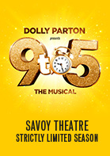
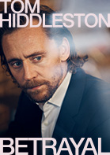
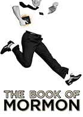
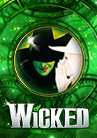
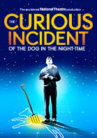

Shows
We have a range of shows to offer you, so have a look around and see what you might like!
Most Popular Shows
    9 to 5 The Musical
Savoy Theatre
Overview
From 28 January 2019
Tumble outta' bed and stumble to Dolly Parton’s rip-roaring West End musical!
9 to 5 the Musical is about to get down to business - with a strictly limited season at the West End's Savoy Theatre.
Starring Louise Redknapp, Amber Davies, Natalie McQueen, Bonnie Langford and Brian Conley, the smash-hit musical features an Oscar, Grammy and Tony award-nominated score by the Queen of Country herself, Dolly Parton.
9 to 5 the Musical tells the story of Doralee, Violet and Judy - three workmates pushed to boiling point by their sexist and egotistical boss. Concocting a plan to kidnap and turn the tables on their despicable supervisor, will the girls manage to reform their office - or will events unravel when the CEO pays an unexpected visit?
Inspired by the cult film and brought to you by Dolly herself, this hilarious new West End production is about teaming up, standing up and taking care of business!
Please note: Dolly Parton will not be appearing in this production
Book Ticket
Betrayal
The Harold Pinter Theatre
Overview
Golden Globe and Olivier Award winner Tom Hiddleston stars in the Jamie Lloyd
Company’s revival of Harold Pinter’s Betrayal, opening at London’s Harold Pinter Theatre
for a strictly limited 12 week season from 5 March 2019.
With poetic precision, rich humour and an extraordinary emotional force, Betrayal charts
a compelling seven-year romance, thrillingly captured in reverse chronological order.
Described as “the greatest, and the most moving, of all Pinter’s plays” (Daily Telegraph), this
production marks the culmination of the Jamie Lloyd Company’s ground-breaking Pinter at the Pinter season.
Book Ticket
Disney's The Lion King
Lyceum Theatre
Overview
Set against the majesty of the Serengeti Plains and to the evocative rhythms of Africa,
Disney’s multi-award winning musical will redefine your expectations of the theatre.
Brilliantly reimagined by acclaimed director Julie Taymor, Disney’s beloved film has been
transformed into a spectacular theatrical experience that explodes with glorious colours,
stunning effects and enchanting music.
At its heart is the powerful and moving story of Simba – the epic adventure of his journey
from wide-eyed cub to his destined role as the King of the Pridelands.
Book Ticket
The Book Of Mormon
Palace Theatre Manchester
Overview
The New York Times calls it ‘The best musical of this century.’ The Washington Post says, 'It
is the kind of evening that restores your faith in musicals.’ And Entertainment Weekly raves,
'Grade A: the funniest musical of all time.' It’s The Book of Mormon, the nine-time Tony
Award and four-time Olivier winning Best Musical.
This outrageous musical comedy from creators of South Park, Trey Parker and Matt Stone,
and Bobby Lopez co-writer of Avenue Q and Frozen, follows the misadventures of a
mismatched pair of missionaries, sent on a mission to a place that’s about as far from Salt
Lake City as you can get. Now with sold out productions in London, on Broadway, and in
North America, Melbourne and Sydney, The Book of Mormon has become a worldwide sensation.
Book Ticket
Wicked
Overview
WICKED, the West End and Broadway musical sensation, is the recipient of more than 100
major international awards, including three Tony Awards on Broadway and two Olivier
Audience Awards in London.
Already the 5th longest running musical currently playing in the West End and now seen
by more than 9 million people in London alone, WICKED remains 'one of the most
popular West End musicals ever' (Evening Standard).
'The gravity-defying ‘Wizard of Oz’ prequel' (Time Out London) tells the incredible untold
story of an unlikely but profound friendship between two young women who first meet as
sorcery students. Their extraordinary adventures in Oz will ultimately see them fulfil their
destinies as Glinda The Good and the Wicked Witch of the West.
Transporting audiences to a stunningly re-imagined world of Oz, this unforgettable
musical features stunning costumes, spectacular sets and show-stopping songs in a night
of spellbinding theatrical magic.
Book Ticket
The Curious Incident of The Dog In The Night-Time
Piccadilly Theatre
Overview
Booking from 29 November - 27 April 2019
The smash-hit National Theatre production of The Curious Incident of the Dog in the
Night-Time returns to London for a strictly limited season, following an acclaimed UK and I
nternational tour.
Winner of 7 Olivier Awards and 5 Tony Awards® including ‘Best Play’, The Curious
Incident of the Dog in the Night-Time brings Mark Haddon’s best-selling novel to thrilling
life on stage, adapted by two-time Olivier Award-winning playwright Simon Stephens and
directed by Olivier and Tony Award®-winning director Marianne Elliott.
Christopher, fifteen years old, stands beside Mrs Shears’ dead dog. It has been speared
with a garden fork, it is seven minutes after midnight and Christopher is under suspicion.
He records each fact in the book he is writing to solve the mystery of who murdered
Wellington. He has an extraordinary brain, exceptional at maths while ill-equipped to
interpret everyday life. He has never ventured alone beyond the end of his road, he
detests being touched and he distrusts strangers. But his detective work, forbidden by his
father, takes him on a frightening journey that upturns his world.
Book Ticket
Caroline, or Change
Playhouse Theatre
Overview
Don’t miss the extraordinary and joyously original Caroline, Or Change, as the five-star,
Olivier award-winning musical transfers to the West End this November following sell-out
runs at the Chichester Festival and Hampstead Theatres.
Written by Tony Kushner, author of legendary play Angels in America, and with an
exceptional, soaring score from Tony Award-winning Jeanine Tesori, Caroline, Or Change
stars Sharon D. Clarke in an astonishing 'virtuoso performance. To watch her seems a
privilege' (The Times).
Louisiana, 1963. Revolution is in the air, though not so much for Caroline, the poorly paid
maid toiling endlessly in the sweltering basement of the Gellman household. It’s a
fantastical, magical place amidst the piles of laundry and singing washing machines,
especially for eight-year-old Noah Gellman who sneaks downstairs to see her whenever he can.
Yet a simple gesture to leave more money in Caroline’s pocket is about to test who
and how far the winds of change can ever really reach…
Winner of the Olivier Award for Best New Musical, Caroline, Or Change is a playful, funny,
and deeply moving tale set to a score that hits new heights of emotion, in a production
that always delights with imagination. Directed by Michael Longhurst (Amadeus, Constellations),
this vital and timely musical opens at the Playhouse Theatre from 20 November 2018 for a strictly limited season.
Book Ticket
Summer And Smoke
Overview
Following a critically acclaimed, sold-out run at the Almeida Theatre, Rebecca Frecknall’s ‘shiveringly
beautiful production’ (The Sunday Times) of Tennessee Williams’ Summer and Smoke transfers to the West End’s Duke
of York’s Theatre for a strictly limited season.
Trapped between desire and a life of obligation, Alma meets John and her world turns upside down. With ‘spellbinding,
stripped-back staging’ (Financial Times), this intoxicating classic about love, loneliness and self-destruction evokes
the simmering passions of a sweltering summer in small-town Mississippi.
Book Ticket
Les Miserables
Overview
After nearly a decade since the last sell-out UK tour, Cameron Mackintosh’s acclaimed Broadway production of Boublil and Schönberg’s
musical Les Misérables will tour the UK in 2019.
This brilliant new staging has taken the world by storm and has been hailed ‘Les Mis for the 21st Century’.
With scenery inspired by the paintings of Victor Hugo, the magnificent score of Les Misérables includes the songs:
I Dreamed a Dream, On My Own, Bring Him Home, One Day More, Master Of The House and many more.
Seen by over 120 million people worldwide in 45 countries and in 22 languages, Les Misérables is undisputedly one of the world’s most
popular musicals.
Book Ticket
Kinky Boots
Overview
With songs by Grammy® and Tony® winning pop icon Cyndi Lauper, Kinky Boots takes you from the factory floor
to the glamorous catwalks of Milan.
Charlie Price is struggling to live up to his father’s expectations and continue the family business of Price & Son.
With the shoe factory’s future hanging in the balance, help arrives in the unlikely but spectacular form of Lola - a fabulous performer in need of some
sturdy new stilettos.
West End star Kayi Ushe will be putting on the boots to play Lola. He will be joined by Paula Lane as Lauren, best known for her role as Kylie Platt in
Coronation Street, and Joel Harper-Jackson, who recently starred in the The Curious Incident of the Dog in the Night Time UK tour, will be playing Charlie Price.
Inspired by true events, this joyous story of Brit grit to high-heeled hit is the ‘Freshest, most fabulous, feel-good musical of the decade’
– The Hollywood News. It’s the ultimate fun night out for you and your loved ones, so book now and experience the energy, joy and laughter of this dazzling show.
Book Ticket
The Bodyguard
Overview
The international, award-winning smash-hit musical based on the blockbuster film, The Bodyguard is back! Following her triumphant West End run and sell-out UK Tour,
three-time Brit nominee and X-Factor winner, Alexandra Burke* returns to the role of Rachel Marron.
Former Secret Service agent turned bodyguard, Frank Farmer, is hired to protect superstar Rachel Marron from an unknown stalker.
Each expects to be in charge – what they don't expect is to fall in love.
A ‘brilliant!’ (The Times), breathtakingly romantic thriller, The Bodyguard features a whole host of irresistible classics including Queen of the Night,
So Emotional, One Moment in Time, Saving All My Love, Run to You, I Have Nothing, Greatest Love Of All, Million Dollar Bill, I Wanna Dance With Somebody
and one of the greatest hit songs of all time – I Will Always Love You.
Book Ticket
9 to 5 The Musical
Savoy Theatre
Overview
From 28 January 2019
Tumble outta' bed and stumble to Dolly Parton’s rip-roaring West End musical!
9 to 5 the Musical is about to get down to business - with a strictly limited season at the West End's Savoy Theatre.
Starring Louise Redknapp, Amber Davies, Natalie McQueen, Bonnie Langford and Brian Conley, the smash-hit musical features an Oscar, Grammy and
Tony award-nominated score by the Queen of Country herself, Dolly Parton.
9 to 5 the Musical tells the story of Doralee, Violet and Judy - three workmates pushed to boiling point by their sexist and egotistical boss.
Concocting a plan to kidnap and turn the tables on their despicable supervisor, will the girls manage to reform their office - or will events unravel when the CEO pays an unexpected visit?
Inspired by the cult film and brought to you by Dolly herself, this hilarious new West End production is about teaming up, standing up and taking care of business!
Please note: Dolly Parton will not be appearing in this production
Book Ticket
Matilda The Musical
Overview
With book by Dennis Kelly and original songs by Tim Minchin, Matilda The Musical is the story of an extraordinary little girl who, armed with a
vivid imagination and a sharp mind, dares to take a stand and change her own destiny.
Winner of over 85 international awards, including 16 for Best Musical, Matilda The Musical continues to delight audiences in London and on
tour across the UK and Ireland.
Book Ticket
Wicked
Overview
WICKED, the West End and Broadway musical sensation, is the recipient of more than 100
major international awards, including three Tony Awards on Broadway and two Olivier
Audience Awards in London.
Already the 5th longest running musical currently playing in the West End and now seen
by more than 9 million people in London alone, WICKED remains 'one of the most
popular West End musicals ever' (Evening Standard).
'The gravity-defying ‘Wizard of Oz’ prequel' (Time Out London) tells the incredible untold
story of an unlikely but profound friendship between two young women who first meet as
sorcery students. Their extraordinary adventures in Oz will ultimately see them fulfil their
destinies as Glinda The Good and the Wicked Witch of the West.
Transporting audiences to a stunningly re-imagined world of Oz, this unforgettable
musical features stunning costumes, spectacular sets and show-stopping songs in a night
of spellbinding theatrical magic.
Book Ticket
Josh Widdicombe - Bit Much..
Overview
The guy everyone can do an impression of is back with a brand new stand up tour. A show that will change your life and how you perceive your place in the world.
Bit much? Fine, it’ll be a very funny night of grumbles and jokes in which Josh will finally tackle the hot comedy topics of advent calendars, pesto and the closing time of his local park.
Widdicombe is best known for the twice BAFTA nominated and multiple Broadcast and RTS award winning show, The Last Leg, as well as his critically acclaimed sitcom JOSH, Insert Name Here, QI,
Have I Got New For You, A League of Their Own and his hit podcast Quickly Kevin Will He Score.
Book Ticket
Jimmy Carr - Terribly Funny
Overview
Jimmy’s brand new show contains jokes about all kinds of terrible things.
Terrible things that might have affected you or people you know and love.
But they’re just jokes - they are not the terrible things.
Having political correctness at a comedy show is like having health and safety at a rodeo.
Now you’ve been warned, buy a ticket.
Book Ticket
Russell Kane - The Fast and the Curious
Overview
He’s back. The keenly-awaited brand new tour show is here. Packing more energy than a Duracell factory, Russell’s RS Turbo laugh
engine will motor through love, family and life - once again proving that the fast and the curious amongst us, see more stuff, and get more done.
Multi-award winning comedian, presenter, actor, author and scriptwriter Russell Kane is best known for BBC Three’s Stupid Man, Smart Phone and
the host of three series of BBC Three‘s Live At The Electric. Other TV appearances include BBC One’s Live At The Apollo, BBC Three’s Unzipped,
ITV2’s Celebrity Juice and I’m A Celebrity...Get Me Out of Here Now.
Book Ticket
James Acaster - Cold Lasange Hate Myself 1999
Overview
One time I bought a lasagne from the supermarket, heated it up in the oven and ate a bit of it and it wasn't very nice so I put it in the fridge because
it felt wrong to dump a whole lasagne in the bin and then later on I ate a spoonful of the cold lasagne because I was drunk and it was absolutely delicious.
It was 4am. I then changed the name of a WhatsApp I was a part of to COLD LASAGNE HATE MYSELF 1999 because I had been thinking a lot about how 1999 was the
best year of my life and also about how much I hate myself sometimes. The next day I was asked to name my new show. Come along.
Book Ticket
Romesh Ranganathan - The Cynics Mixtape
Overview
Romesh is back with a brand new show The Cynic’s Mixtape, his most brutally honest show yet.
Fresh from the Misadventures of Romesh Ranganathan, A League Of Their Own and Judge Romesh, he's putting showbiz aside to deliver a carefully curated selection of all the things he has found
unacceptable since the last tour, including why trying to save the environment is a scam, why none of us are truly free, and his suspicion that his
wife is using gluten intolerance to avoid sleeping with him.
Book Ticket
Rhod Gibert - The Book of John
Overview
It has been a while, but the multi-award-winning Welsh comedian is back, with a brand new live show. In a six-year break from stand-up, a lot has happened to Rhod.
Almost all of it s**t.
And just when he thought he’d hit rock bottom, he met a bloke...called John.
This show sees Rhod as funny as ever, but like never before. Raw, personal and brutally honest; no more lies, no more nonsense.
Book Ticket